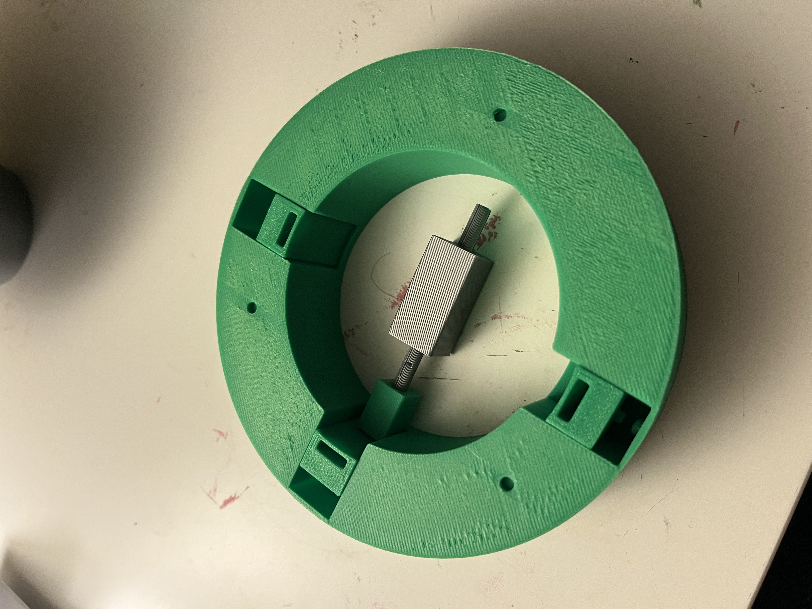
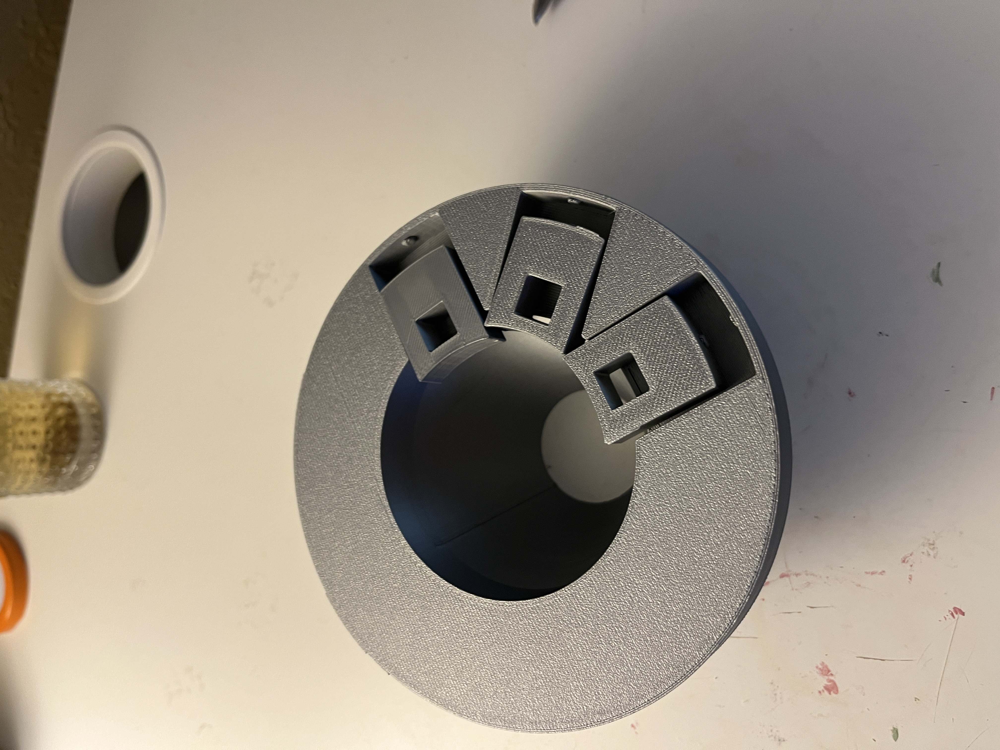
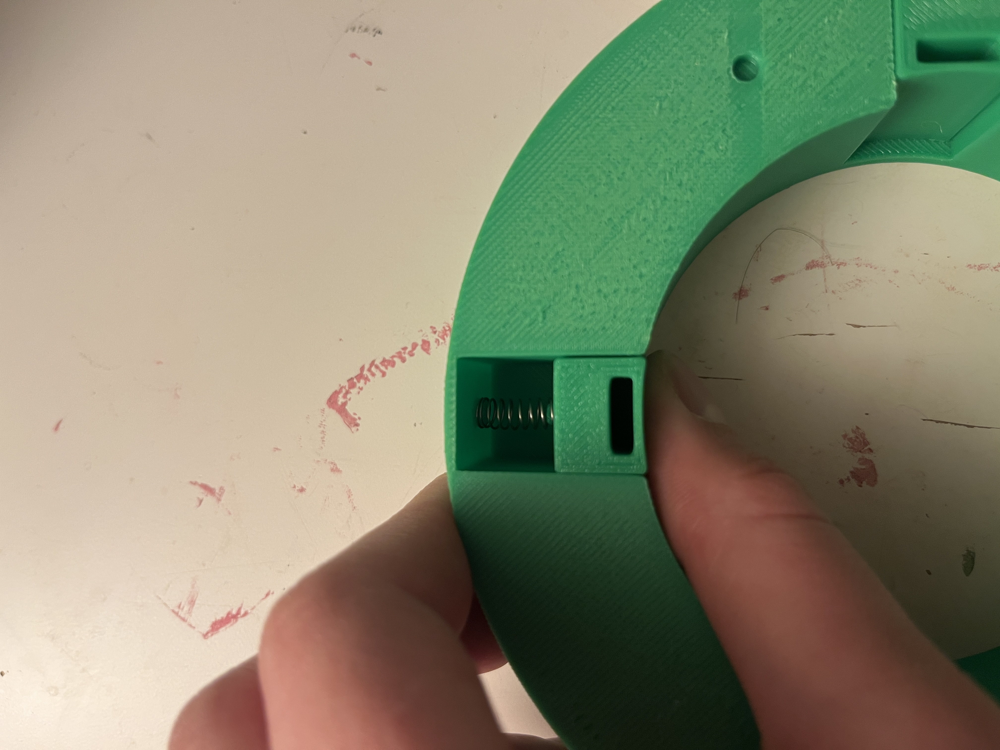
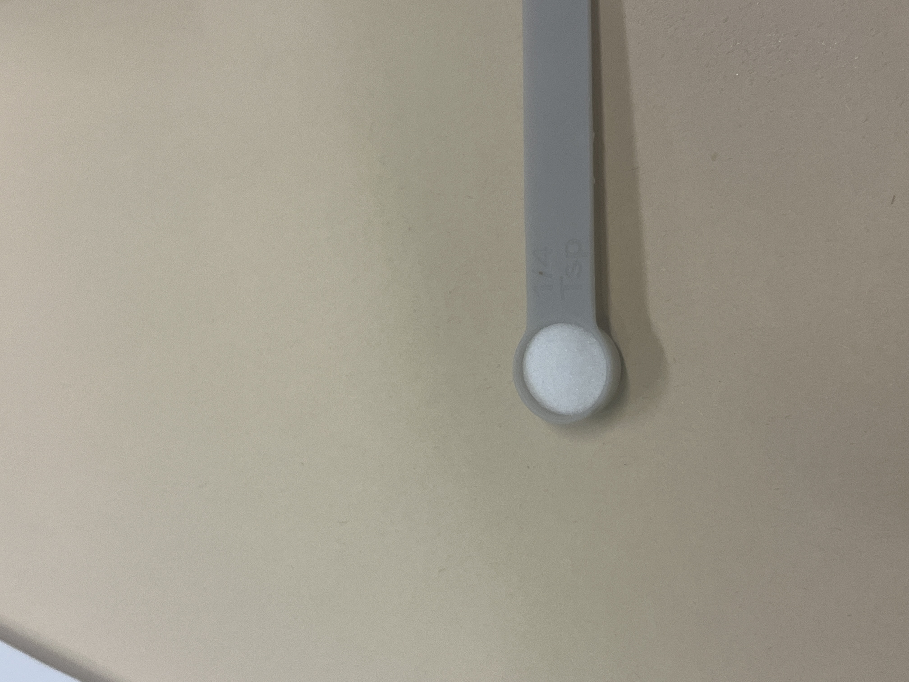
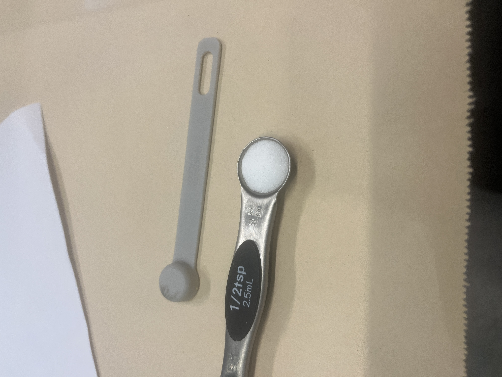

Overview
Measurely is an assistive kitchen device that guides people with limited mobility through baking — step by step. A user selects a recipe on the touchscreen, and the device handles the rest: dispensing precise amounts of dry ingredients automatically, giving scale feedback in real time, and walking through each step one at a time so nothing has to be held in memory, balanced, or rushed.
Built over a full semester with teammates Sophie and Sam, Measurely was my capstone for the ATLAS program and presented as a functional prototype at the April 2026 ATLAS Expo. My role covered product design, fabrication, and CAD.
Why This

I grew up making tea rings and monster cookies with my grandmother. It was always a core memory: flour on the counter, the two of us in the kitchen together. She's had Parkinson's my whole life, and as we both got older, her shakiness and dexterity got worse. The tea rings got few and far between.
Baking is deeply personal. For many people, it's how they show love, maintain tradition, and feel capable in their own home. But as mobility and coordination decline with age or illness, the kitchen becomes one of the first places that independence slips away, and not because someone can't bake, but because the tools weren't designed with them in mind.
We saw this play out in our research too. We talked to people across a range of abilities and kitchen experience levels, and heard the same thing consistently: precise measurement is hard for everyone, and significantly harder when mobility is limited. Measuring cups require steady hands and sharp eyes. Recipes live on phones with small text, far from the counter. Scales, spoons, and instructions are three separate things to juggle at once. This is an overwhelming amount of coordination for someone whose hands shake, or who can only use one arm, or who tires quickly.
Existing solutions didn't close that gap. Our precedents research showed that Thermomix does everything but costs thousands and wasn't built for accessibility. Recipe apps are beautifully designed… for people who can tap a glass screen with floury hands. The Brava Oven is built for limited mobility, but it's an oven, not a measurement tool.
Existing solutions didn't close that gap. Our precedents research showed that Thermomix does everything but costs thousands and wasn't built for accessibility. Recipe apps are beautifully designed… for people who can tap a glass screen with floury hands. The Brava Oven is built for limited mobility, but it's an oven, not a measurement tool.
None of them answered the question we kept coming back to: how do you make measuring ingredients genuinely manageable for someone with limited hand strength or coordination?
That's what Measurely is built to answer.
Part 1 — Research & User Insight
Before we built anything, we needed to understand who we were building for. We interviewed people across a range of ages, abilities, and kitchen experience levels, from confident home bakers to people who'd largely stopped cooking due to physical limitations. The pattern that emerged was consistent: precise measurement is a pain point for almost everyone, and it's compounded significantly by limited mobility or coordination.
Holding a measuring cup steady while pouring. Leveling off a tablespoon of flour with one hand. Squinting at a recipe on a phone screen across the counter. These aren't edge cases, they're the core mechanics of baking, and they assume a level of dexterity that many people don't have.
A later usability survey pushed us toward a specific hardware decision. When we asked users how confident they were tapping a touchscreen with flour-covered hands, the answer was clear: not very. When given a choice between a screen-based "dispense" button and a large physical button mounted on the device, users overwhelmingly preferred the physical control — both for confidence and for reaction speed. That single finding shaped the button and screen interface that became central to Measurely's design.
"Baking is a fundamental act of care."
— Emily Fitzgerald, Strategic DesignerPart 2 — Dispensing Mechanism
The hardest problem Measurely had to solve was also the most invisible to a user: how do you dispense a precise teaspoon of baking powder, automatically, from a compact countertop device? We went through two fundamentally different mechanisms before landing on something that worked.
Attempt 1
ScrappedSolenoid + Rotating Insert
Our first mechanism was inspired by a gumball machine: a rotating wheel with a fixed cavity that would capture exactly one unit of dry ingredient and drop it through. We paired it with a solenoid to drive the rotation. In testing, it failed. The friction forces from fine dry ingredients like baking soda overwhelmed the spring return, the mechanism jammed, and we couldn't get consistent output. This wasn't a fixable tweak. It was a fundamental mismatch between the physics of the mechanism and the physics of fine powder. We scrapped it and started over.



Attempt 2
Final approachAuger Screw
We pivoted to an auger. It is a rotating screw that moves material along its thread the same principle used in everything from meat grinders to industrial grain conveyors. Unlike the solenoid, it doesn't rely on springs or gravity alone. It moves material deliberately, at a controlled rate, which made it a better fit for the precision we needed.
The first prototype after the pivot came together in ten days. At that stage we weren't trying to be precise, we were trying to answer a simpler question first: does this even work? We started with an open-top design so we could watch how different ingredients moved through the screw. Salt behaved differently than baking soda. Baking powder clumped. Cinnamon packed. Each ingredient had its own personality, and watching them move (or fail to move) told us things we couldn't have predicted.
From there we iterated on the exit geometry: a tunnel exit that helped direct flow, an external ramp, and eventually a fully integrated ramp-funnel-tube system that directed ingredients cleanly into the bowl below.
3D Model Iterations


Testing & Iteration


Mechanism Videos
Calibration
A working auger was only half the problem. The other half was time: specifically, how many milliseconds to run the motor to dispense exactly ¼ teaspoon of salt versus ¼ teaspoon of baking powder. Every ingredient behaves differently. Salt is dense and coarse. Baking soda is fine and consistent. Cinnamon is light and prone to clogging. There was no formula we could look up. We had to derive one ourselves.
The method was straightforward: run the motor for 10 seconds, weigh the output, divide by 10 to get a flow rate in grams per second. Then use that flow rate to calculate exactly how long the motor needed to run for each standard baking measurement: ¼ tsp, ½ tsp, 1 tsp, 1 tbsp.
In practice it was anything but simple. Early salt runs at 0.8mm tolerance produced outputs ranging from 18g to 26g over 12 trials, far too inconsistent. Switching to 0.9mm tolerance stabilized things. Baking powder required adding a small agitator to prevent clumping. Cinnamon needed its own tolerance entirely. Each ingredient got dozens of test runs at each measurement target before we locked in a time.
The end result: consistent, repeatable dispensing across four ingredients at every standard baking measurement from ¼ teaspoon to 1 tablespoon. Salt hitting ¼ tsp in 1000ms. A full tablespoon of baking soda in under 9 seconds. Every measurement confirmed across multiple consecutive outputs before being locked in.
Data & Results




Part 3 — Physical UX & Enclosure
A device for people with limited mobility has to earn trust before someone picks it up. That meant every physical decision (material, weight, height, layout, surface texture) needed to be intentional.
Materials Testing
We tested materials against three criteria: food safety, cleanability, and weight. Surfaces were soiled with flour, oil, and water, then cleaned with a paper towel and sponge, and evaluated for residue.


Stainless steel cleaned completely and added structural stability. Wood would require sealing but offered warmth and approachability, which are both important qualities for a device meant to feel like part of a kitchen, not a piece of medical equipment. We landed on a sealed plywood enclosure with stainless contact surfaces: light enough to move, grounded enough to feel stable in use.
The Touchscreen Decision
Early prototypes explored a physical knob as the primary control, an appealing choice for users with limited hand precision, since it requires no fine grip and gives tactile feedback. In practice, we couldn't source electronics with sufficient documentation to implement it reliably within our timeline, so we committed fully to a touchscreen interface instead.
That constraint pushed us to think harder about touchscreen accessibility. We designed large, high-contrast tap targets, kept each screen to a single action, and ensured no step required more than one interaction before advancing. The result is an interface that works with a knuckle, a single extended finger, or a light tap, and that tradeoff (while born from a practical limitation) reinforced something our user research had already suggested: clarity of interface matters more than modality.
Enclosure Build


Final Prototype
Measurely presented at the April 2026 ATLAS Expo as a functional prototype. A user can walk up to the device, select a recipe, and be guided through every measurement step: dry ingredients dispensed automatically, scale feedback in real time, instructions one step at a time on screen. All of this without needing to read a separate recipe, handle a measuring cup, or manage more than one thing at a time. The dispensing mechanism supports dry ingredients at standard baking measurements from ¼ teaspoon to 1 tablespoon.
Final Photos


Reflection
This project taught me that the hardest part of building something physical isn't any individual problem, it's the endlessness of the iteration. Something that works on Monday breaks on Wednesday when you change one variable. A mechanism that passes a test in isolation fails when it meets real flour. You develop a kind of tolerance for that, and then eventually a rhythm: test, observe, adjust, repeat. By the end of the semester that rhythm felt natural. At the beginning it felt like failure.
The pivot from solenoid to auger in week three was the moment that defined how I approached the rest of the project. We didn't abandon the solenoid because we gave up — we abandoned it because the testing told us something true, and we listened. Learning to treat a failed test as information rather than a setback was the most transferable thing I took out of this semester.
I also learned that physical UX is unforgiving in ways that screen UX isn't. A button on a screen can be moved in ten minutes. A hole in a wood enclosure cannot. Every spatial decision carries real consequence, and that pressure made me a more deliberate designer: more likely to sketch and model before committing, more likely to ask whether a decision serves the user or just solves an engineering problem.
Working across disciplines with Sophie and Sam reinforced something I already believed: the best outcomes happen at the edges between roles. The knob-vs-touchscreen debate, the bowl layout, the height of the dispensing outlet — none of those decisions belonged cleanly to mechanical, electrical, or UX. They required all three of us, and they were better for it.
If More Time
- Food-safe materials The current prototype uses PLA for the auger and dispensing components. A production version would require food-grade alternatives (stainless steel or food-safe plastic) to meet safety standards and withstand repeated washing.
- Multi-ingredient rotation & auger redesign The current build demonstrates dispensing with a single loaded ingredient. True multi-ingredient rotation requires solving tolerance and friction differences across all four ingredients simultaneously. A next version would redesign the auger per ingredient type.
- Motor force & key connection The universal key connecting the motor shaft to the auger broke during final testing. It was the clearest signal that the system needs more mechanical security. A next version would increase motor torque and redesign the key connection to engage and disengage reliably across hundreds of cycles.
- Smaller form factor The current enclosure is large by necessity due to the fact that proof of concept work requires room to test, adjust, and access components. The next pass would shrink the footprint significantly, and a more compact carousel design could expand the ingredient library from four to six or eight, meaningfully widening the recipe library.